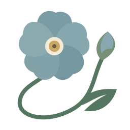
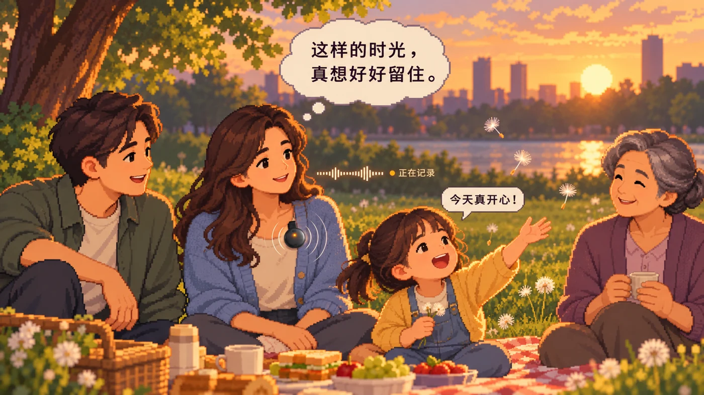

趁还记得，慢慢讲
给想记录一生的长辈。用熟悉的说话方式，把过往讲给家人听。

勿忘我REMEMBER ME 观看短片
“那时候，日子慢，
一家人坐在一起就很好。”
产品短片 / 我们的故事
一分钟，认识 Remember Me01 / 为什么记录
为讲述的人，也为想念的人小时候住过的老房子，第一次离家的车站，
一道菜里藏着的习惯。我们想留下的，是这些
细碎、真实、无法替代的生活。
给想记录一生的长辈。用熟悉的说话方式，把过往讲给家人听。
给想留下心声的人。普通的日常、重要的时刻，都值得被认真收好。
给珍惜共同回忆的亲友。回听当时的声音，也读到故事里的感受。
“想为这个世界留下点什么，
让在乎的人记得我。”— Remember Me 的起点
02 / 走进一段记忆
可交互的故事示例选一个故事，看看 Remember Me
怎样记录、整理，再陪你回望。
每个故事，都保留自己的来处。
MEMORY / 记忆整理
关联本人原话，保留故事背景。
整理结果由本人核对，可修正或删除。
以上为预设内容的交互演示，不会录音或调用 AI。真实产品中的原话、AI 推测与未知，会分别标注。
03 / 产品一览
陈守义与亲友 · 虚构演示内容跟着陈守义和女儿，走过七个界面。
从教女儿骑车的回忆，到留给她的一封有声信。
从一次自然讲述开始，留住声音和故事的起点。此图为录音与设备连接的界面示意。
录音与设备
界面示意 · 点击步骤或箭头切换
04 / 一段记忆如何被理解
从声音到回答，始终连着来源保留原音与讲述情境
转写与校对，由本人确认
提取事件、关系与观点
带着背景，保留变化与例外
按授权浏览、回听与提问
新的讲述与本人的修订，会继续更新相关记忆与人物理解。
05 / 我们的坚持
记住一个人，也尊重一个人原始片段能回答时，优先呈现本人讲述。推测会明确标注，证据不足就承认未知。
重要内容可检查、修正、删除。谁能看、能问什么，都应在本人的授权范围内。
本人讲述、亲友补充与 AI 推断分别标注。亲友的记忆，不会悄悄变成你的事实。
录音与声音合成分别授权。Twin 的回答不代表新的本人意愿，也不能替代本人作出决定。
一些你可能关心的事
录音和转写是起点。Remember Me 想让声音成为有来源、可核对的记忆，再逐步形成对一个人的经历、关系、偏好与表达方式的理解。
本页故事区是固定示例，不连接产品账号或 AI 服务。手机预览使用最新提供的陈守义七界面图片：Twin 页为真实产品对话截图，其余为基于真实 UI 的排版示意。陈守义及亲友故事均为虚构演示内容，图片中的按钮不执行真实 App 操作。
项目已进行录音、转写核对、记忆整理、人物理解、来源问答、授权分享与声音播放的原型验证。当前仍是内测试用；不同客户端的完成范围与稳定性存在差异。本页不提供正式版下载或注册。
录音豆能力与 SDK 接入仍在验证；手机录音可作为独立入口。当前展示专属留言，完整的条件托付、认领与身后人格基线冻结属于后续规划。
FOR EVERY STORY WORTH REMEMBERING